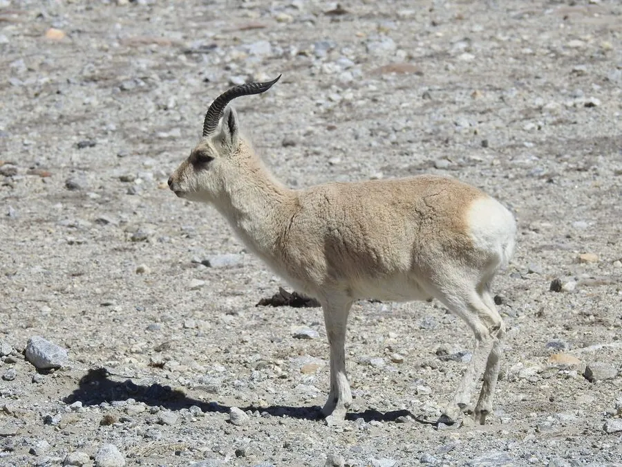

哺乳动物 · 动物界
藏原羚 Procapra picticaudata

青藏高原特有的一种小型羚羊，臀部有醒目的白色心形斑块，奔跑轻快，是高原上常见的有蹄类之一。
- 分类
- 门脊索动物门纲哺乳纲目偶蹄目科牛科属原羚属
- 栖息环境
- 海拔 3000–5750 米的高寒草原、荒漠与湖盆
- 地理分布
- 青藏高原，中国西藏、青海、四川西部、甘肃和新疆南部
- 保护级别
- IUCN 近危（NT）；中国国家二级保护动物
物种志
藏原羚体长 0.95–1.35 米，肩高 0.6–0.7 米，体重 13–24 kg，体形纤细。它的被毛为沙黄至灰褐色，腹部和臀部白色；臀部有一块醒目的白色心形大斑，在奔跑时格外显眼。雄羊长有细长的角，角向后弯曲，长约 25–30 cm，雌羊无角。
藏原羚分布于青藏高原，主要在中国西藏、青海、四川西部、甘肃和新疆南部，也见于印度拉达克地区，栖息于海拔 3000–5750 米的高寒草原、荒漠和湖盆。它以禾草、苔草为主食，结成数只至数十只的群体活动，多在晨昏取食，善于奔跑，时速可达 60–80 km/h。雄羊在繁殖季争夺配偶；雌兽妊娠期约 6 个月，每胎 1 仔，幼羚出生后不久即可站立行走。藏原羚是狼、藏狐、猞猁等捕食者的猎物，也是高原生态系统的重要一环；因栖息地变化和捕猎，被列为近危，中国将其列为国家二级保护动物。
形态与习性
- 食性禾草、苔草等高寒植物
- 体长0.95–1.35 m，肩高 0.6–0.7 m
- 体重13–24 kg
- 寿命野外约 8–10 年
- 繁殖妊娠期约 6 个月，每胎 1 仔
- 角雄羊角细长后弯，长约 25–30 cm
- 臀部斑白色心形大斑，奔跑时格外显眼
趣味知识
- 藏原羚臀部有一块白色心形斑，奔跑时十分醒目。
- 它是青藏高原特有物种，幼羚出生后不久就能站立行走。
- 藏原羚奔跑轻快，时速可达 60–80 km/h。
- 藏原羚是藏狐、狼和猞猁等捕食者的重要猎物。